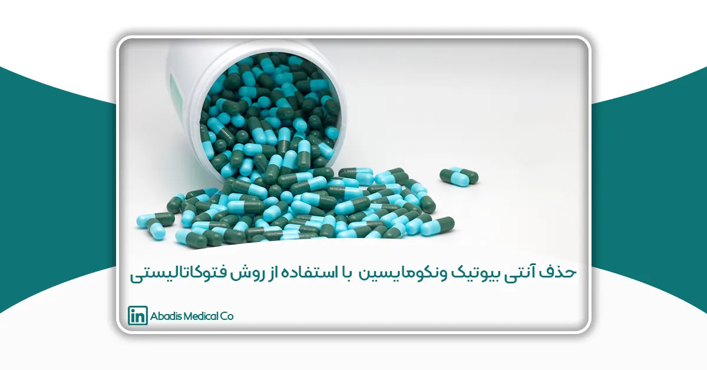
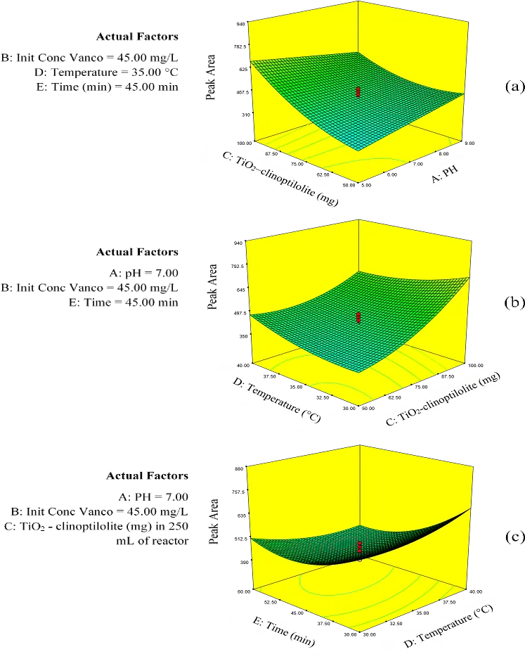

این مقاله توسط سرکارخانم فاطمه دهقانی نوشته شده؛ و برای یازدهمین کنگره کنترل عفونت ارسال شده است.
خلاصه
آنتیبیوتیکها در آبهای سطحی، زیرزمینی،تصفیه خانههای فاضلاب و حتی آب آشامیدنی شناسایی شده اند. یکی از رایج ترین روش های از بین بردن آنتیبیوتیکها در محیطهای آبی، اکسیداسیون پیشرفته است. بنابراین،مطالعه حاضر با هدف ارزیابی تجزیه وانکومایسین توسط دی اکسید تیتانیوم( TiO2) – کلینوپتیلولیت و بهینهسازی آن با استفاده از طرح مرکب مرکزی (CCD) انجام شد. وانکومایسین از طریق کروماتوگرافی مایع با کارایی بالا اندازه گیری شد.علاوه بر این، روش سطح پاسخ (RSM) برای بررسی رابطه بین تخریب وانکومایسین و متغیرهای مستقل از جمله pH، غلظت وانکومایسین، غلظت کاتالیست، دما و زمان استفاده شد. اعتبار و کفایت مدل با آمارهای مربوطه تایید شد (ضریب همبستگی 0.98 = 2 R). راندمان تخریب وانکومایسین در شرایط بهینه 97% بود(pH معادل 5، غلظت وانکومایسین معادل 30 میلی گرم در لیتر، محتوای TiO2-کلینوپتیلولیت معادل 50.2 میلی گرم در راکتور 250 میلی لیتر، دما معادل 32.24 درجه سانتیگراد، و زمان واکنش معادل 50.9 دقیقه). نتایج نشان داد که استفاده از کاتالیست دی اکسید تیتانیوم( TiO2 ) – کلینوپتیلولیت می تواند خواص فوتوکاتالیستی را افزایش و میزان تخریب ونکومایسین قابل قبولی ایجاد نماید.
کلمات کلیدی: تجزیه آنتی بیوتیک، ونکومایسین، کلینوپتیلولیت، دی اکسید تیتانیوم، طراحی مرکب مرکزی
مقدمه
استفاده از آنتیبیوتیکها به طور قابل توجهی در سراسر جهان افزایش یافته است. Bayan و همکاران توضیح داد که استفاده از آنتیبیوتیکها به دنبال بیماری کروناویروس( 19-COVID) افزایش یافته است. این مواد از مسیرهای مختلفی مانند فاضلاب صنایع داروسازی، فاضلاب بیمارستانی و فضولات انسان و حیوان وارد محیط می شوند. تصفیه خانههای فاضلاب به عنوان منبع اصلی ورود آنتیبیوتیکها به محیط زیست شناسایی شده اند. این آلایندهها، متابولیتهای آنها و محصولات تخریب شده آنها میتوانند از طریق مهاجرت یا تجمع بر محیط زیست و سلامت انسان تأثیر منفی بگذارند. عوارض جانبی عبارتند از تهوع،استفراغ،بثورات پوستی و کولیت همراه با آنتیبیوتیکها. از آنجایی که آنتیبیوتیکها پس از مصرف به طور کامل در بدن متابولیزه نمی شوند،حدود 30 تا 90 درصد از 300000 تن آنتیبیوتیک در جهان پس از دفع فعال باقی می مانند. بنابراین، بسیاری از آنتیبیوتیکهای فعال سالانه در محیط پراکنده می شوند. مقدار آنتی بیوتیک از ng/L در آب های سطحی تا میکروگرم در لیتر در تصفیه خانههای فاضلاب و پسابهای بیمارستانی گزارش شدهاست. این مقدار در فاضلاب دارویی میتواند به میلی گرم در لیتر برسد.
وانکومایسین رایج ترین آنتیبیوتیک گلیکوپپتیدی در بین سایر آنتیبیوتیکها است. از آن به عنوان آخرین خط دفاعی در برابر بیماریهای جدی مانند اندوکاردیت،ذات الریه و مننژیت استفاده میشود. استفاده از وانکومایسین در بیمارستانهای آلمان به ویژه در مناطق جنوبی این کشور افزایش یافته است. در نتیجه، مقاومت به وانکومایسین از 11.2 درصد در سال 2014 به 26.1 درصد در سال 2017 افزایش یافت. علاوه بر این، غلظت وانکومایسین در رودخانه های فرانسه 9 نانوگرم در لیتر بود. این مقدار در پسابهای تصفیه شده بیمارستانهای فرانسه 1.6 و 37.3 میکروگرم در لیتر بود. طبق گزارش Laverman، راندمان حذف وانکومایسین در طی فرآیندهای تصفیه لجن فعال و UV به ترتیب 52 و 28 درصد بود. علاوه بر این، Qiu و همکاران، بیشترین غلظت وانکومایسین در کارخانه های داروسازی چین ۵.۹۷ ± ۵۴.۹۰ میلیگرم در لیتر و ۳.۶۰ ± ۴۶.۳۲ میلی گرم در لیتر، در ورودی تصفیه خانه ها و ۰.۰۴ ± ۰.۵۰ میلیگرم در لیتر و ۰.۲۴ ± ۰.۰۴ میلیگرم در لیتر در پساب نهایی بود. وانکومایسین، به عنوان یک آنتیبیوتیک، ممکن است دارای سمیت حاد یا مزمن برای باکتریها، جلبکها، بی مهرگان و ماهیها در محیط آبی باشد. تعداد زیادی از آنتیبیوتیکها تجزیه ناپذیر هستند و می توانند برای مدت طولانی در محیط های آبی زنده بمانند. تصفیه خانه فاضلاب در حذف آنتیبیوتیکها بی تاثیر است و مطالعاتی وجود دارد که نتایج تجربی آنها حاکی از محدودیت روش های تصفیه در تجزیه محصولات دارویی است. دلایل ذکر شده نشان می دهد که روش های تصفیه جدیدی برای حذف آنتی بیوتیک ها از محیط های آبی مختلف مورد نیاز است. در نتیجه تمایل به روشی که این گونه مواد را به مواد غیر سمی تبدیل می کند افزایش یافته است.
در میان روش های تصفیه فاضلاب، فرآیندهای اکسیداسیون پیشرفت( AOPs) میتوانند ترکیبات آلی را توسط رادیکالهای هیدروکسیل تحت اشعه UV یا نور مرئی در تصفیه آب و فاضلاب تجزیه کنند. AOP ها را می توان به سیستم های ناهمگن و همگن تقسیم کرد. کاتالیزور مورد استفاده در فرآیندهای ناهمگن یک ماده نیمه رسانا است. نیمه هادی هایی مانند فوتوکاتالیز ناهمگن مبتنی بر دی اکسید تیتانیوم (TiO2) به طور گسترده برای تجزیه آنتی بیوتیک از محیط های آبی استفاده می شود. استفاده از اشعه ماوراء بنفش یا نور مرئی با یک نیمه هادی باعث ایجاد جفت الکترون و حفره(e/h) به ترتیب در باندهای هدایت(CB) و والانس(VB) نیمه هادی می شود. الکترون های تولید شده(e–) می توانند اکسیژن محلول را کاهش دهند تا رادیکال های سوپراکسید تولید کنند. در مقابل، سوراخ ها( h+) می توانند مولکول های آب یا آنیون های هیدروکسیل را برای تولید رادیکالهای هیدروکسیل اکسید کنند. این رادیکالهای واکنشگر قدرتمند میتوانند سپس به آلایندههای آلی حمله کنند، آنها را به قطعات کوچکتر بشکنند و در نهایت به آب یا دیاکسید کربن تبدیل کنند. TiO2 به طور گسترده به عنوان یک فوتوکاتالیست در تصفیه فاضلاب مواد دارویی استفاده میشود. دارای فعالیت فوتوکاتالیستی عالی، در دسترس بودن گسترده، غیرسمی بودن و نسبت سطح به حجم بالا است. TiO2 به عنوان یک نیمه هادی دارای شکاف انرژی بزرگ (۳.۲ eV) است. همچنین دارای پایداری شیمیایی در شرایط عملیاتی و ظرفیت اکسیداسیون بسیار بالای سوراخ های ایجاد شده بر روی پیوند ظرفیت است. بنابراین، به طور گسترده ای به عنوان ماده اصلی راکتورهای فوتوکاتالیستی استفاده میشود. اما، تجزیه نوری ترکیبات آلی با TiO2 به دلیل سرعت کم انتقال الکترون به اکسیژن محدود است. همچنین، ترکیب مجدد e-/h+ تولید شده توسط TiO2 محدود شده است. عملکرد آن در آزمایشهای تجزیه نوری و فعالیت فوتوکاتالیستی به طور قابل توجهی کاهش می یابد که هزینه روش را افزایش می دهد. علاوه بر این، دارای یک ناحیه فتوکاتالیستی باریک(< 400 نانومتر) است که می تواند تنها بخش کوچکی از نور خورشید را جذب کند ،۲ تا ۳٪. جذب ضعیف ،مساحت سطح کم، ترکیب مجدد سریع جفت الکترون-حفره، و مشکل در جداسازی محلول منجر به محدودیت های قابل توجهی در استفاده از TiO2 از محلول می شود. از سوی دیگر، رادیکالهای هیدروکسیل عمر کوتاهی دارند (چند نانوثانیه). در نتیجه باید بلافاصله پس از تولید واکنش نشان دهند. پراکندگی ذرات TiO2 روی کلینوپتیلولیت، سطح بزرگتری نسبت به TiO2 به تنهایی ایجاد می کند. اکبری و همکاران. نشان داد که پراکندگی ذرات TiO2 روی کلینوپتیلولیت فعالیت کاتالیزوری را بین 12 تا 57 درصد افزایش داد.
در دهه های اخیر، پشتیبانی از نیمه هادیها بر روی بسترهای مختلف، کارایی فوتوکاتالیستی آنها را افزایش داده است. زئولیت ها به دلیل منافذ یکنواخت منحصر به فرد و کانالهای مستقیم خود در بین تکیه گاههای مختلف مورد توجه بیشتری قرار گرفته اند. در بین زئولیتها، کلینوپتیلولیت طبیعی مقرون به صرفه تر و سازگارتر با محیط زیست است. این زئولیت به دلیل ساختار منحصر به فرد، منافذ یکنواخت، قیمت پایین، خلوص بالا، ظرفیت تبادل یونی بالا، چگالی کم، مساحت سطح زیاد ،درجه بلورینگی بالا، توانایی جذب مولکول ها و یون ها و همچنین در دسترس بودن در ایران در مطالعه حاضر مورد توجه قرار گرفته است. ظرفیت جذب این زئولیت، مولکول های آلاینده آلی را در نزدیکی سطح کاتالیزور، جایی که رادیکال هیدروکسیل تولید می شود، قرار می دهد. در نتیجه راندمان تخریب نوری افزایش می یابد. مزیت دیگر زئولیت این است که از تراکم TiO2 در فرآیندهای فوتوکاتالیستی ناهمگن جلوگیری می کند که باعث افزایش سطح موثر نیمه هادی (TiO2) می شود. زئولیت همچنین دارای میدان الکتریکی قوی است که از ترکیب مجدد جفتهای الکترون/حفره از طریق توزیع الکترونهای تولید شده در ماده جلوگیری میکند. بنابراین در مقایسه با سایر حامل ها فعالیت بیشتری نشان می دهد. تاکنون بیش از 100 نوع زئولیت در طبیعت یافت شده است. کلینوپتیلولیت برای بدن سمی نیست و بدون جذب از کل دستگاه گوارش عبور می کند. این ماده در شرایط مختلف محیطی پایدار است و دمای بالای 4500 درجه سانتیگراد را تحمل می کند. همچنین در برابر شرایط قلیایی و اسیدی بدون هیچ گونه تخریب مقاوم است.
با این حال، هیچ مطالعه ای برای ارزیابی اثر ترکیب TiO2– کلینوپتیلولیت بر تخریب وانکومایسین انجام نشده است. بنابراین ،مطالعه حاضر به منظور سنتز یک کامپوزیت با پوشش TiO2 بر روی سطح زئولیت به عنوان یک ماده ارزان قیمت برای افزایش راندمان تخریب ونکومایسین انجام شد. روش سطح پاسخ(RSM) یک روش ریاضی و آماری برای به دست آوردن شرایط بهینه برای یک سیستم چند متغیره است. این با موفقیت در فرآیندهای فتوکاتالیستی مختلف برای دستیابی به بهینه سازی آن با استفاده از طرحهای تجربی استفاده شده است .RSM یک استراتژی خوب است که عملکرد فرآیند را بهبود می بخشد و کارایی سیستم را بدون افزایش هزینه های مرتبط افزایش می دهد. در این مطالعه، برای اولین بار ،RSM بر اساس طراحی مرکب مرکزی (CCD) به منظور تعیین شرایط بهینه برای تجزیه وانکومایسین توسط نانوکامپوزیت TiO2-کلینوپتیلولیت تحت نور UV مورد استفاده قرار گرفت.
روش کار
متغیرهای مستقل مورد استفاده در آزمایشها به شرح زیر بود: Ph معادل 3-11، زمان واکنش: 15-75 دقیقه، دما: 25-45 درجه سانتی گراد، غلظت وانکومایسین: 15-75 میلی گرم در لیتر، و کاتالیست TiO2-کلینوپتیلولیت: 25 -125 میلی گرم در راکتور 250 میلی لیتری. واکنش های تخریب فوتوکاتالیستی در یک راکتور 250 میلی لیتری مجهز به شیکر انجام شد. منبع نور یک لامپ UV-C (۶ وات) با طول موج 254 نانومتر ساخت فرانسه بود که در یک لوله کوارتز(30 سانتی متر طول و 5 سانتی متر قطر) قرار داشت و در محلول برای تابش بهتر در مرکز غوطه ور بود. از یک دماسنج برای تنظیم دما در راکتور استفاده شد و pH نمونه ها با اسید هیدروکلریک 0.1 % و هیدروکسید سدیم 1% تنظیم شد. کل سیستم برای جلوگیری از انعکاس در فویل آلومینیومی پیچیده شده بود. در طول هر فرآیند، نمونهها در فواصل 15، 30، 45، 60 و 75 دقیقهای از راکتور گرفته شد. ذرات کاتالیزور از طریق سانتریفیوژ از محلول جدا شدند. در نهایت مقدار وانکومایسین باقیمانده توسط کروماتوگرافی مایع با کارایی بالا ( HPLC) اندازه گیری شد .
درصد تجزیه وانکومایسین(R%) با استفاده از معادله محاسبه شد.
R%=(C_in-C_out)/C_in ×100
C_in و C_out نشان دهنده غلظت وانکومایسین (mg/L) قبل و بعد از فرآیند TiO2-clinoptilolite/UV بودند.
یافتهها
اثرات شرایط عملیاتی مختلف بر میزان تخریب وانکومایسین
اثر pH
pH یک پارامتر قابل توجه در فرآیندهای فوتوکاتالیستی است که بر تخریب ترکیبات آلی تأثیر می گذارد. خواص فوتوکاتالیستی مانند بار سطحی، اندازه ذرات و تجمع ذرات به شدت تحت تأثیر pH محلول قرار دارند. دانستن بارهای انباشته شده روی سطح کاتالیزور یا جاذب به ما کمک می کند تا اسیدیته محلول را برای رسیدن به بهترین سیگنال بهینه کنیم. فرآیند تخریب نوری بر روی سطح کاتالیزور انجام می شود. سپس، بار سطحی کاتالیزور و pH محلول اطراف نقش اساسی در بازده کاتالیزوری دارند. بنابراین ،pHpzcTiO2-کلینوپتیلولیت تعیین شد. به طور کلی، قبل از pHzpc (بار نقطه صفر)،سطح کاتالیزور دارای بار منفی است که می تواند پروتون های تولید شده در فرآیند تجزیه آب را از محلول اطراف کاتالیزور جذب کند .
به دلیل وجود آنیون های هیدروکسیل در محلول مجاور ،pH آن افزایش می یابد. و سطح کاتالیزور بار مثبت دریافت می کند. طبق مطالعه رضایی و همکاران، زمانی که pHS > pHpzc، سطح کاتالیزور دارای بار مثبتی است که آنیون های هیدروکسیل آب را جذب می کند. این فرآیند منجر به دریافت بار منفی خالص توسط سطح کاتالیزور و کاهش pH محلول در تماس می شود.
pHzpc برای TiO2-کلینوپتیلولیت 6.5 به دست آمد. در مقادیر pH کمتر از 6.5، TiO2-clinoptilolite دارای بار مثبت است که باعث میشود وانکومایسین راندمان تخریب بالاتری داشته باشد. در مقابل، کاتالیزور TiO2-کلینوپتیلولیت در مقادیر pH بالاتر دارای بار منفی می شود. اگرچه رادیکال های هیدروکسیل می توانند تشکیل شوند، اما بدون داشتن فرصتی برای واکنش و تخریب مولکول های وانکومایسین از بین می روند. بنابراین، راندمان حذف وانکومایسین با افزایش مقادیر pH کاهش می یابد.
این نتایج با مطالعه پترلا و همکاران مطابقت داشت. مهرآبادی و همکاران نشان داد که وقتی نیروی دافعه بین سطح کاتالیزور (بار منفی) و الکترونهای آزاد(بارهای منفی) در pH > pHzpc افزایش مییابد، کاهشی در سرعت تخریب
فوتوکاتالیستی آلاینده و جذب مشاهده شد. از آنجایی که بار سطحی کاتالیزور به شدت به pH محلول بستگی دارد، تأثیر pH بر سرعت تخریب نوری در محدوده 11-3pH مورد مطالعه قرار گرفت. نتایج برهمکنش بین TiO2-کلینوپتیلولیت و pH محلول در شکل 5 (الف) نشان داده شده است. همانطور که در شکل نشان داده شده است، افزایش مقدار کاتالیزور و pH باعث افزایش سطح پیک و کاهش راندمان تخریب وانکومایسین می شود. بین مساحت پیک و بازده تخریب رابطه معکوس وجود دارد. به عبارت دیگر، هر چه سطح پیک بیشتر باشد، بازده تخریب کمتر خواهد بود. مطابق شکل 5 (الف) در pH حدود 5، ناحیه پیک کمترین مقدار است، به این معنی که راندمان تخریب حداکثر مقدار در 5pH است.
Liu نشان داد که میزان حذف سولفادیازین توسط TiO2-زئولیت ابتدا افزایش و سپس در pH بین 2 تا 12 کاهش یافت. حداکثر حذف در Ph ph 7 93.31 درصد بود. ملکوتیان و همکاران نشان داد که راندمان حذف سیپروفلوکساسین توسط دی اکساید تیتانیوم (TiO2) 92.81 درصد در ph معادل ۵ بود. به همین ترتیب، غفار و همکاران. گزارش شده است. تخریب فنل 97% در pH اسیدی معادل 2-5 100% در pH طبیعی و 80% در pH ۱۲-۹ بود. پترسون و همکاران همچنین بیشترین تخریب پنی سیلین توسط TiO2 را در در ph ۴ و ۵ نشان داد. همانطور که گفته شد، تجزیه وانکومایسین در شرایط اسیدی بهتر انجام شد که با مطالعات فوق مطابقت دارد.
اثر میزان کاتالیست
غلظت کاتالیزور پارامتر مهمی است که به شدت بر تخریب آلاینده های آلی تأثیر می گذارد. اثر کاتالیزور TiO2-کلینوپتیلولیت بر تجزیه نوری ونکومایسین با تغییر دوز کاتالیزور از 25-125 میلی گرم در 250 میلی لیتر از راکتور مورد مطالعه قرار گرفت. شکل(b)(1) برهمکنش بین کاتالیزور و دما را نشان می دهد. با افزایش دما و کاتالیزور، پیک افزایش می یابد و راندمان تخریب ونکومایسین کاهش می یابد. همانطور که در شکل 1 (a) و(b) نشان داده شده است، مقدار کاتالیزور کمتر از 50 و بیش از 100 میلی گرم در یک راکتور 250 میلی لیتری تأثیر کمی بر راندمان تخریب وانکومایسین دارد. در محدوده 50-60 میلی گرم کاتالیزور در یک راکتور 250 میلی لیتری، مکان های کاتالیزور فعال کافی وجود دارد و هیچ تجمعی برای ذرات آن رخ نداده است. مقدار بیش از حد کاتالیزور راندمان تخریب فوتوکاتالیست را کاهش می دهد زیرا کاتالیزور شدید منجر به کدورت سوسپانسیون، کاهش نفوذ اشعه ماوراء بنفش و کاهش تعداد مکان های فعال به دلیل تجمع ذرات می شود.
اثر دما
دمای بین 293 تا 353 کلوین(Kelvin) گزارش شده است که تأثیر ضعیفی بر سرعت اکسیداسیون واکنشهای فوتوکاتالیستی دارد. انرژی فعال سازی ظاهری در دماهای پایین تر(بین 233 تا 273 کلوین) افزایش می یابد در حالی که در دمای بالای 353 کلوین منفی می شود. با این حال، انرژی های فعال سازی گزارش شده برای واکنش های فوتوکاتالیستی کمتر از انرژی های اندازهگیری شده برای واکنشهای فوتوکاتالیستی است. بیان شده است که واکنشهای رادیکال هیدروکسیل عمدتاً به انرژی فعالسازی واکنشهای فوتوکاتالیستی کمک میکنند. علاوه بر این، بیان شد که افزایش دما باعث بهبود انتقال الکترون سطحی به دلیل تغییرات کوچک در سطح نیمه هادی می شود. بر اساس این نتایج، اغلب گزارش میشود که تغییرات جزئی دما بر فعالیت فوتوکاتالیستی تأثیر نمی گذارد. Roushenas و همکاران بیان کرد که دمای بالای 80 درجه سانتیگراد یک عامل محدود کننده برای جذب واکنش دهنده خواهد بود و انرژی فعال سازی ظاهری منفی میشود. میتوان گفت که افزایش سرعت تخریب عکس با افزایش دمای واکنش در محدوده دمایی بین 20 تا 60 درجه سانتی گراد است. Barakat و همکاران دمای بهینه 25 درجه سانتیگراد و 55 درجه سانتیگراد برای تجزیه نوری رنگ توسط نانو الیاف و نانوذرات TiO2 آغشته به نقره بود. آنها همچنین رابطه معکوس بین تخریب نوری و دما برای نانوالیاف را نشان دادند. بر اساس نتایج، افزایش دما منجر به افزایش انرژی جنبشی مولکولهای رنگ شد که باعث فرار آنها از نواحی فعال اطراف نانوالیاف و کاهش راندمان تخریب نوری شد. همانطور که در شکل(1) (b) نشان داده شده است، افزایش دما و محتوای کاتالیزور باعث افزایش سطح پیک و کاهش راندمان حذف وانکومایسین شد. شکل(1) قسمت(b) و(c) نشان می دهد که دمای حدود 30-33 درجه سانتی گراد بهترین دما برای تجزیه وانکومایسین است و دمای کمتر و بالاتر از این مقدار تأثیر کمی بر راندمان تجزیه وانکومایسین دارد.
اثر زمان واکنش
در مطالعه حاضر، زمان واکنش برای تجزیه وانکومایسین 15-75 دقیقه بود. برهمکنش زمان واکنش و دما در شکل 1(c) ارائه شده است. بر این اساس، با افزایش زمان واکنش از 15 به 75 دقیقه، سطح پیک کاهش و راندمان تخریب افزایش یافت. بهترین تخریب در دمای کمتر از 35 درجه سانتیگراد در 45-55 دقیقه رخ داد. تغییرات جزئی دما بر فعالیت فوتوکاتالیستی تأثیر نمی گذارد. در ابتدای آزمایشها، مکانهای زیادی روی سطح کاتالیزور وجود داشت، پس از چند دقیقه، مکانهای فعال کاهش یافت تا اینکه سرعت تخریب به سطح تقریباً پایدار رسید. در برهمکنش بین زمان و دما، همانطور که در شکل 1 (c) نشان داده شده است، افزایش زمان واکنش باعث کاهش سطح پیک و افزایش راندمان تخریب وانکومایسین شد. زمان کمتر از 30 دقیقه بر تجزیه وانکومایسین تأثیری ندارد.

تخریب ونکومایسین در شرایط بهینه
پس از انتخاب بهترین پارامترها و طرح، شرایط بهینه برای تجزیه وانکومایسین به شرح زیر تعیین شد: pH معادل 5، غلظت اولیه وانکومایسین 30 میلیگرم در لیتر، کاتالیست TiO2-کلینوپتیلولیت ۵۰.۲۴ میلیگرم در راکتور 250 میلیلیتری، دمای ۳۲/۲۴ درجه سانتیگراد و زمان واکنش 50.9 دقیقه که در این شرایط بهینه، تخریب وانکومایسین برابر با 97 درصد بود .
نتیجه گیری
RSM یک روش آماری مناسب برای بهینهسازی آزمایشهای حذف وانکومایسین است. این روش امکان مطالعه اثرات متغیرها بر کارایی فرآیند را با استفاده از حداقل تعداد آزمون فراهم کرد. شرایط بهینه برای تجزیه وانکومایسین توسط TiO2-کلینوپتیلولیت/UV به شرح زیر است: pH معادل 5، غلظت اولیه وانکومایسین 30 میلی گرم در لیتر، میزان کاتالیست ۵۰.۲۴ میلی گرم در راکتور 250 میلی لیتر، دمای ۳۲/۲۴ درجه سانتی گراد و زمان واکنش ۵۰.۹ دقیقه. تحت این شرایط، راندمان تخریب ونکومایسین ۹۷٪ بود. نتایج نشان داد که استفاده از TiO2 – کلینوپتیلولیت کارایی خوبی در تجزیه وانکومایسین در محیط های آبی دارد .